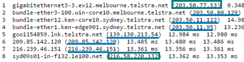

Proyecto Final
Aplicación: Trazabilidad de Rutas en Internet
Seleccione el servidor desde donde desea realizar la petición a www.google.com
Inicio
Sudamérica
Norteamérica
Europa
Oceanía
África
Oceanía - Servidor: Australia - Telstra R
